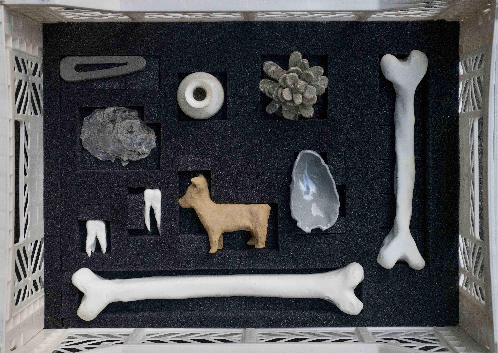
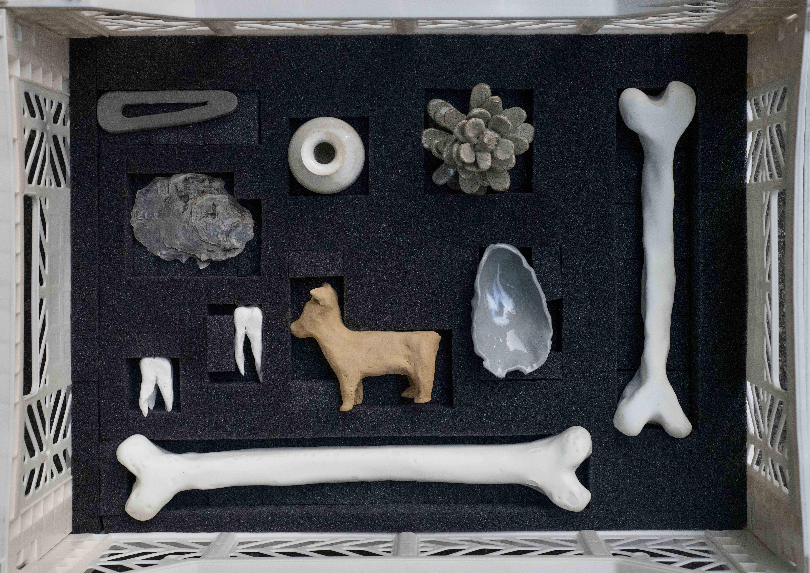

Materials: glazed stoneware, glazed porcelain, earthenware, air-dry clay, fine silver, 3D printed resin, plastic crates, foam, guide ropes, trolley.
To what extent is an archive more than the sum of its parts? What value does it have except for being a collection?1 What defines the importance of an artefact? How much of the meaning we attribute to them is based on projections?
Working predominantly with ceramics Danielle Goulé explores the changing nature of our interaction with material and the way artefacts inform our perception of the past. Inspired by the field of archival practice, this site specific work explores the lives of artefacts and the physical or symbolic journeys they make.
Her recent solo exhibition, Relic Screens, used the backdrop of an archaeological dig site to pose questions about the way our consumption habits will be represented in a future archaeological record. This body of work moves further along the potential trajectory of an artefact, into the archive, where it may lay indefinitely dormant or, if deemed important, be viewed and included in a historical narrative.
Archiving, generally speaking, is an action that attempts to counter transience. The archive attempts to stabilise or materialise bygone events or knowledge.2 Artefacts remind us that our current reality is temporary and that many a crisis has come before us; there is something reassuring in the existence of stacks upon stacks of quotidian items in museum collections. But the items we see on display in museums are representative of just a fraction of those in their stores; only 1% of the artefacts in the collection of the British Museum are on display within the institution at any given time.
The trolley (pirra) as a motif represents the moment when an artefact is moved in or out of storage, becoming either public or private. This work explores the potential for artefacts to be observed in new and novel contexts. In pendant, scraper, votive offering, replica objects are created using imagery from online museum archives. The objects on show in this work are primarily replicas of items which have previously not been selected for exhibition. In creating this work, Goulé provides these artefacts with the chance to be seen.
There is a stoicism in the permanence of ceramics; the material has been witness to many a pandemic and will likely survive many more. This work includes numerous objects made from un-fired clay which contrary to the everlasting pottery of many museum collections, has ephemerality inbuilt and the potential to disintegrate back to dust.
The title of this project is based on the terminology used to categorise objects in the archive at British Museum, whereby terms connecting the object to a ritual function, such as ‘votive offering’ are secondary to those that describe a so-called practical function.
– Danielle Goulé